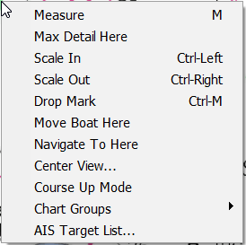
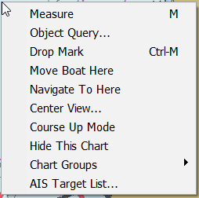
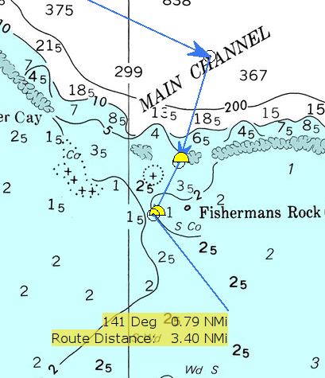
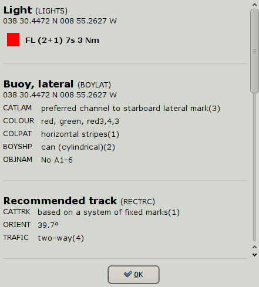
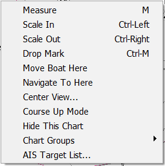
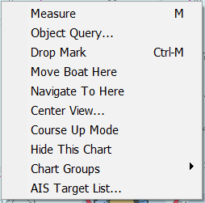

The right click menu is always available as long as the cursor is somewhere in the chart area. The content of this menu is very context sensitive. The reason for the “Focused Context Menus”, is to keep the number of options down to a reasonable level, and still be able to deal with all situations. Additionally, many Plugins add items to the right-click menu.
There are basic right-click menus when clicking at a random point, and very focused menus when clicking on a waypoint, a route, a track or an AIS target. If you have just created or deleted a waypoint, or if chart groups are defined, there are further entries added to the basic menu. Some plugins also adds entries to the right-click menu when they are used. Below, the basic entries are explained.The more context specific entries are dealt with as the concerned feature is explained.
Below is first the rastercharts menu to the left and then the vector chart menu. Available “hotkeys”, if any, are shown to the right.
 
Starting with the left menu for rastercharts.
Activates a “pencil”. Move the pencil with the cursor. Put the tip of the pencil on a position that you want to measure from. Left-click, a dot Position with a circle around is created. Move the pencil with the mouse and see the distance and bearing from the point to the pencil-tip in “real time”. Left-clicking again creates a temporary waypoint. When moving the “pencil” again, distance and bearing, once again are shown from the temporary waypoint. The total distance from the original measure point, via the temporary wapoint(s) are also shown as “Route Distance”. Right click and mark “Measure Off” to stop measuring.
For longer distances, specially on east.west courses on higher latitudes, the measure tool seamlessly switches to display and measure great circles instead of Mercator rhumb-lines. Read more Great-circle Sailing
The “Create Route” tool works in a similar way, but you can't use the two tools at the same time.

Displays the largest scale, most detailed chart, available in the position of the cursor.
It is assumed that there are more than one chart available at the position.
Displays the next larger scale chart.
It is assumed that there are more than one chart available at the position.
Displays the next smaller scale chart.
It is assumed that there are more than one chart available at the position.
Drops a mark in the position of the cursor. Further explained on this page Marks and Routes
Moves own boats position to the position pointed at. This item is only visible in the right click-menu if the GPS isn't connected.
Creates an instant active route from own boat to the position clicked. The option does not appear when following an active route. More about routes: Marks and Routes
Activates a small dialog where latitude and longitude can be entered. Pressing “OK” centers the display on this position, keeping the same scale. If a position has been copied, and is in your copy buffer, it will be displayed as default values. OpenCPN accepts a wide variety of position formats. The values entered is kept during a session, but goes when restarting OpenCPN.
Is shown because we are in North Up Mode. Clicking this entry changes the display to “North Up Mode.” It is a toggle switch between “North Up” and “Course Up”. Read more about display orientation: navigation_modes
Hides the chart from quilting
Selector list of all defined Chart Groups. Very useful.
Shows a list of discovered AIS targets, if any. Read more on AIS
Looking at the right click menu for vector charts, to the right above,we can see these additional entries.
Every point on a vector-chart has certain attributes, or information. This can vary from just the depth in mid ocean to much more. Double clicking is an alternative to display the object query dialog. Here is an example from a lateral buoy in the entrance channel to a medium sized port.

The scrollbar on the right side of the dialog, reveals that more info is available by scrolling down. Much more about this on the Vector Display
Apply corrections to CM93 chart cells through this dialog. Read more on the CM93 Offsets
page in the Advanced section of this manual.


The only new item in the quilted menus is
The chart becomes excluded from the quilt. To show the chart again, find it in the chart bar, now marked with a red “X”, right click and press “Show this Chart”. Read more here: Chart Quilting
Left Mouse click on chart moves to center of view
When Options> UI > Touchscreen interface is checked Left-mouse Click becomes a “Hand” which will grab and pan the screen.
Scroll Wheel, zooming in/out
Alt + scroll wheel, zooming in/out in small steps.